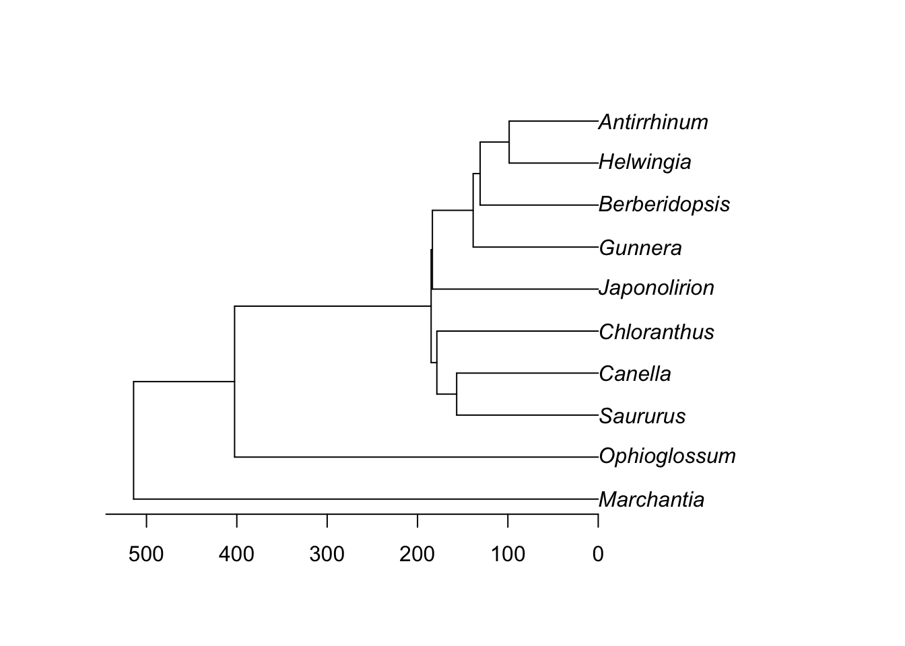
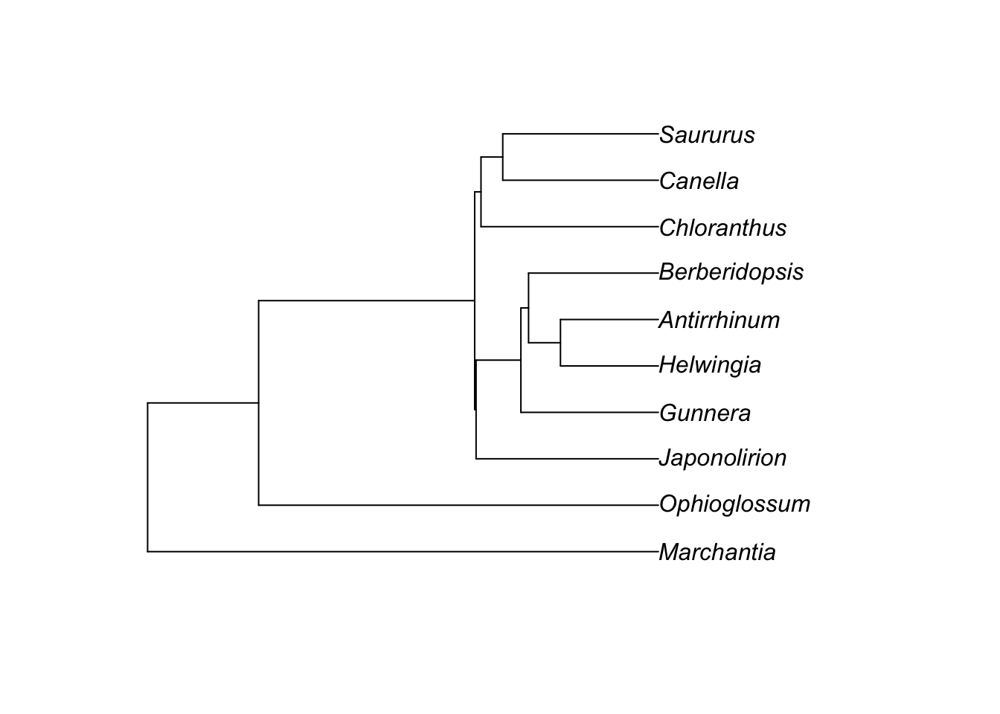
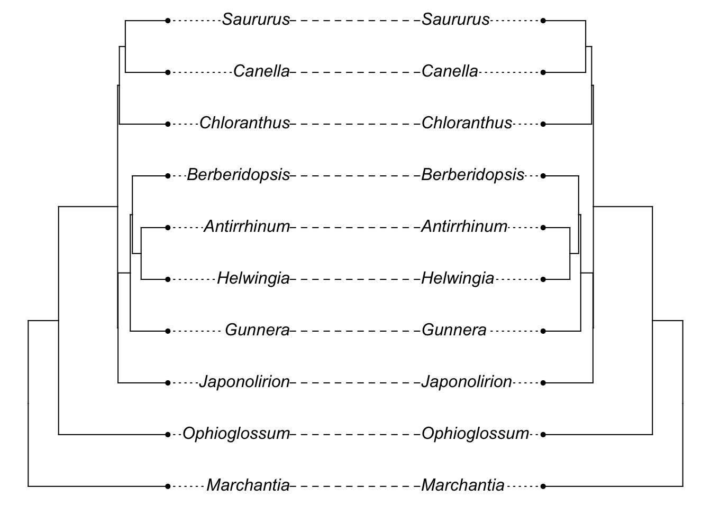
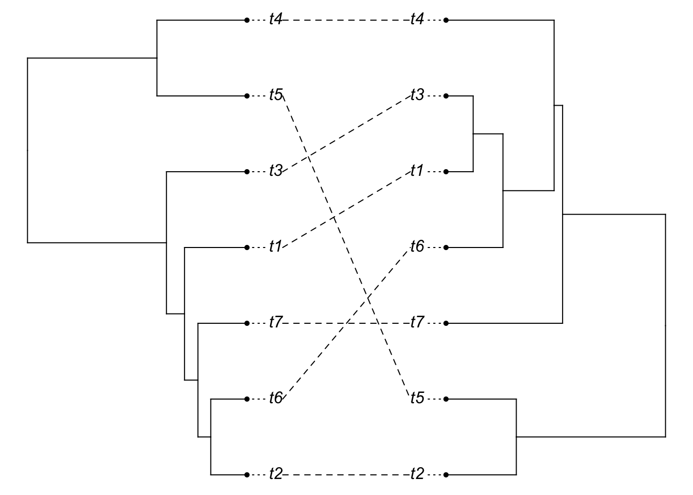
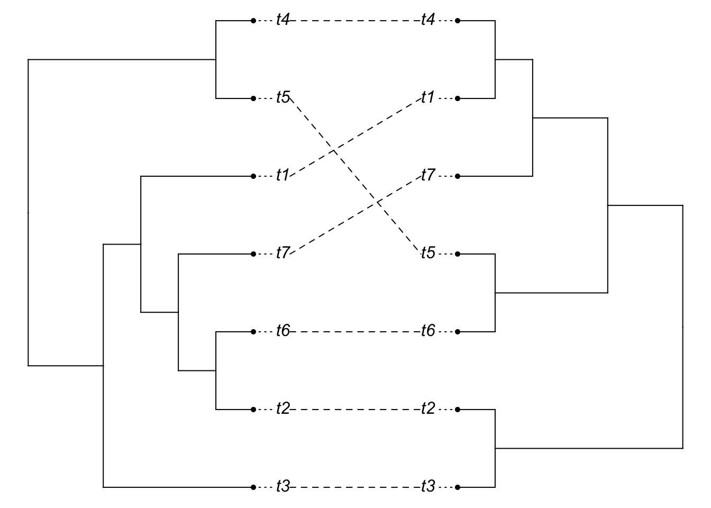

Gene Tree Species Tree
Objectives
By the end of this exercise, you will:
- Understand why gene trees and species trees may not always agree
- Know about some of the approaches in this area
- Understand about phylogenetic networks
First, we will be looking at distinctions between gene trees and species trees. For this, we’ll be using Liang Liu’s phybase package. This isn’t on CRAN, but it is available on his website. However, we’ll be using a version I modified slightly and put on github. Liang’s package uses newick format (yes, named after the restaurant), but with additional options for including population size (branch width, included as a # sign followed by a number) as well as the more traditional branch length. Both matter for coalescence: two copies are much more likely to have coalesced on a long, narrow branch than a short, fat one. Most packages in R instead use ape’s phylo format, so I wrote a few functions to deal with that. This version of the package is on github; to install it:
devtools::install_github("bomeara/phybase")For real science, Liang’s is the canonical one (and definitely cite his) but this will be easier for us to use for class.
First, get a tree from Open Tree of Life. We’ll get a recent plant tree from Beaulieu et al:
library(rotl)
library(ape)
phy <- get_study_tree("ot_485", "tree1")
plot(phy, cex=0.3)Let’s simplify by dropping some taxa:
library(geiger)
phy <- drop.random(phy, Ntip(phy) - 10)
plot(phy)
axisPhylo()
We can simulate gene trees on this tree:
library(phybase)
gene.tree <- phybase::sim.coaltree.phylo(phy, pop.size=1e-12)
plot(gene.tree)
And it probably looks very similar to the initial tree:
library(phytools)
plot(cophylo(phy, gene.tree, cbind(sort(phy$tip.label), sort(gene.tree$tip.label))))## Rotating nodes to optimize matching...
## Done.
[Note I’m being a bit sloppy here: the initial branch lengths of the tree we used are in millions of years (i.e., 5 = 5 MY) while the coalescent sim is treating these as coalescent time units: there would be even lower chance of incongruence if we converted the former into the latter. Unfortunately, the simulator fails with branch lengths that are realistically long for this tree.]
So, does this mean gene tree species tree issues aren’t a problem?
Well, it depends on the details of the tree. One common misconception is that gene tree species tree issues only relate to trees for recent events. This problem can happen any time there are short, fat branches, where lack of coalescence of copies can occur.
species.tree <- rcoal(7)
species.tree$edge.length <- species.tree$edge.length / (10*max(branching.times(species.tree)))
gene.tree <- phybase::sim.coaltree.phylo(species.tree)
plot(cophylo(species.tree, gene.tree, cbind(sort(species.tree$tip.label), sort(gene.tree$tip.label))))## Rotating nodes to optimize matching...
## Done.
You should see (in most iterations), the above code giving a mismatch between the gene tree and the species tree (the species tree has little height). Now, let’s lengthen the tips of the species tree:
tip.rows <- which(species.tree$edge[,2]<=Ntip(species.tree))
species.tree2 <- species.tree
species.tree2$edge.length[tip.rows] <- 100 + species.tree2$edge.length[tip.rows]
gene.tree2 <- phybase::sim.coaltree.phylo(species.tree2)
plot(cophylo(species.tree2, gene.tree2, cbind(sort(species.tree2$tip.label), sort(gene.tree2$tip.label))))## Rotating nodes to optimize matching...
## Done.
It looks like a mismatch, but it’s hard to see, since the tips are so long. So plot the cladogram instead [we need to manually change branch lengths to do this, though note we do not resimulate the gene tree].
species.tree2.clado <- compute.brlen(species.tree2)
gene.tree2.clado <- compute.brlen(gene.tree2)
plot(cophylo(species.tree2.clado, gene.tree2.clado, cbind(sort(species.tree2.clado$tip.label),
sort(gene.tree2.clado$tip.label))))## Rotating nodes to optimize matching...
## Done.
So we can see that even though the relevant divergences happened long ago, gene tree species tree issues are still a problem.